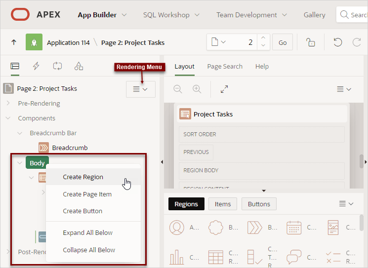
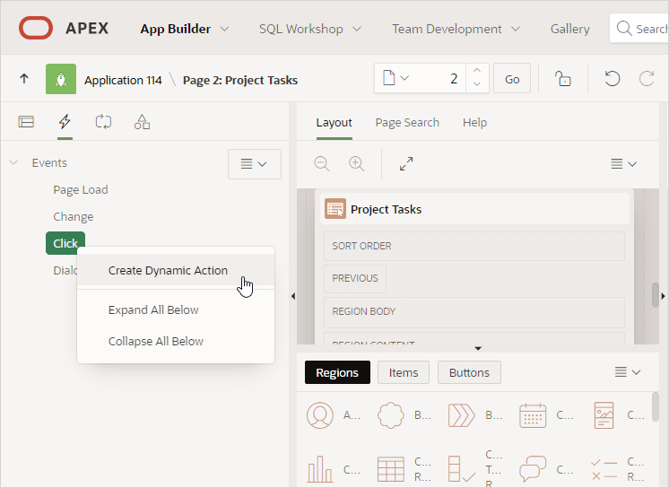
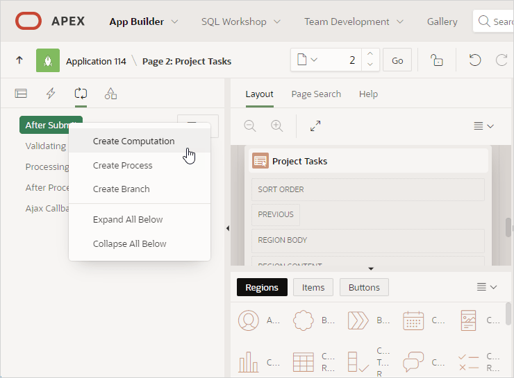
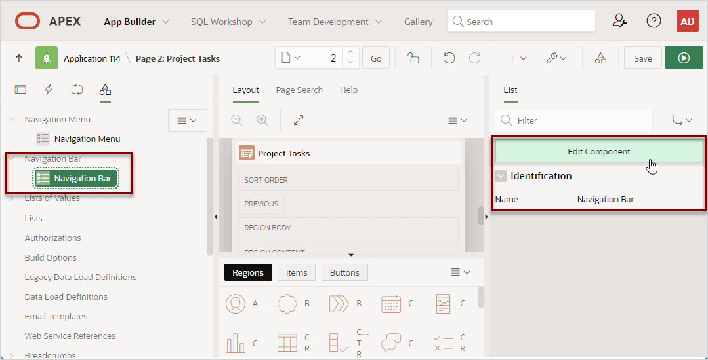

7.2.2 Left Pane of Page Designer
Use the left pane in Page Designer to select or add containers and components on a page.
Once selected, edit the container or component attributes in the Property Editor located in the right pane.
- About the Left Pane of Page Designer
The left pane in Page Designer includes four tabs: Rendering, Dynamic Actions, Processing, and Page Shared Components. - Rendering Tab
Learn about the Rendering tab in the left pane of Page Designer. - Dynamic Actions Tab
Learn about the Dynamic Actions tab in the left pane of Page Designer. - Processing Tab
Learn about the Processing tab in the left pane of Page Designer. - Page Shared Components Tab
Learn about the Page Shared Components tab in the left pane of Page Designer.
Parent topic: Understanding Page Designer UI Elements
7.2.2.1 About the Left Pane of Page Designer
The left pane in Page Designer includes four tabs: Rendering, Dynamic Actions, Processing, and Page Shared Components.
Each tab displays a list of the corresponding component types and components created on the current page.
Key features of the Left pane include:
- Context menus. Right-click a component or control to display a context menu. You can also click the Rendering menu to select options for the selected component.
- Quick Access to the Property Editor. Select a component or multiple components to display the corresponding attributes in the Property Editor in the right pane.
- Drag and Drop. Drag components up and down within the tree to change the position or sequence of the selected component.
- Tooltips. Position the mouse over a component or control to view a tooltip of basic information, such as the region type, item type, and so on.
Parent topic: Left Pane of Page Designer
7.2.2.2 Rendering Tab
Learn about the Rendering tab in the left pane of Page Designer.
The Rendering tab displays containers and components that are rendered on a page. Components include regions, page items, and buttons. Application logic such as Dynamic Actions and Validations display inside of regions, page items, and buttons when applicable.
Components can placed at the page-level at a specific page position, or they can be nested inside regions at a specific region position. Additionally, the Rendering tab displays Pre-Rendering and Post-Rendering application logic such as Processes, Computations, and Branches. The Rendering tab groups and orders components based on how Oracle APEX processes them at runtime
To create a new component, right-click and select an option from the context menu. Alternatively, select an option from the Rendering menu.

Description of the illustration pg_rendering.png
Parent topic: Left Pane of Page Designer
7.2.2.3 Dynamic Actions Tab
Learn about the Dynamic Actions tab in the left pane of Page Designer.
The Dynamic Actions tab displays dynamic actions defined on the current page. By creating a dynamic action, you can define complex client-side behavior declaratively without the need for JavaScript. To create a new dynamic action, right-click and select an option from the context menu.

Description of the illustration pg_dynamic_action.png
See Also:
Parent topic: Left Pane of Page Designer
7.2.2.4 Processing Tab
Learn about the Processing tab in the left pane of Page Designer.
The Processing tab displays application logic defined on the page and groups and orders components based on how APEX processes them. To create a new process, right-click and select an option from the context menu.

Description of the illustration pg_processing.png
Parent topic: Left Pane of Page Designer
7.2.2.5 Page Shared Components Tab
Learn about the Page Shared Components tab in the left pane of Page Designer.
The Page Shared Components tab displays shared components associated with the current page. To edit a Shared Component, select it in the Page Shared Components tab and then click Edit Component in right pane.
In the following example, Navigation Bar is selected in the left pane and the cursor is positioned on Edit Component button in the right pane.

Description of the illustration pg_shared_components.png
See Also:
Parent topic: Left Pane of Page Designer